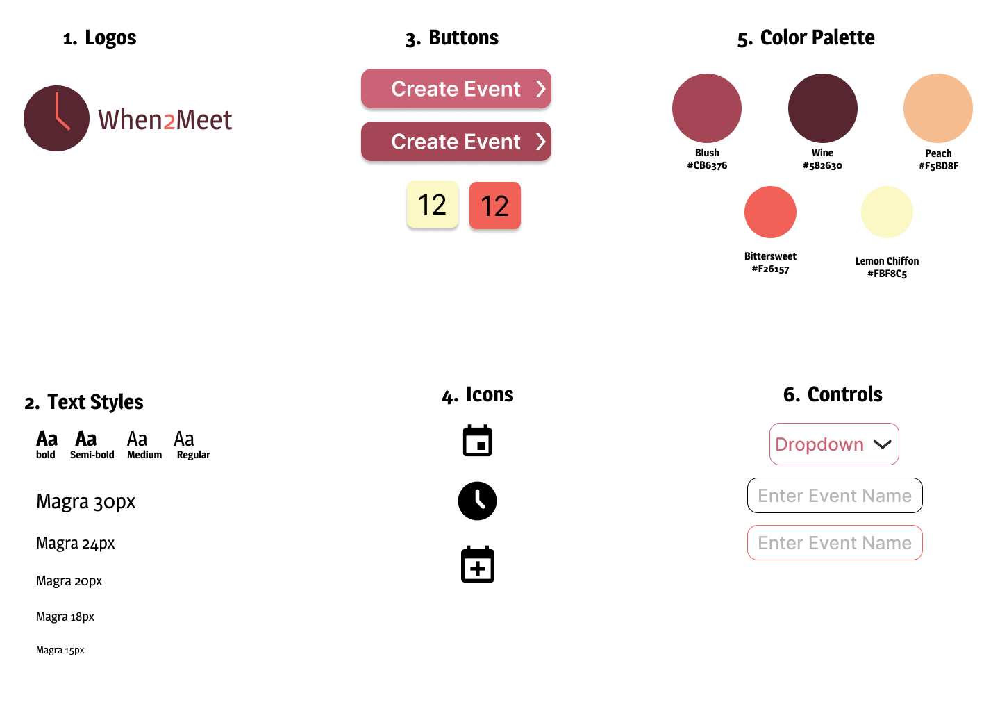

To understand the user experience of the website, I took notes on its memorability, efficiency, learnability, conceptual model, and accessibility
This style guide can help keep work consistent by noting the main colors, typography, and reusable components' different states used in the design. I prioritized color and contrast.
These mockups represent the final goal for the redesigned sites visual aspects as well as its responsivity between screens. I created a stronger information hierarchy and implemented accessible solutions such as increased text size and state changes upon hover.
| Desktop to Tablet | Justification |
|---|---|
| Instructions move to the top of the screen | So that they are the first thing the user sees when they open the page. This is important for learnability and efficiency. |
| Flexbox items in a row squeeze closer | The user does not have to horizontally scroll to access content. |
| Font sizes decrease | So as not to take up the entire screen and remain proportional to other content. |
| Tablet to Smartphone | Justification |
|---|---|
| Header options collapse to menu icon | Removing oversaturation of text and replacing with an icon that implies there are more options to create a better visual layout. |
| Flexbox items in a row collapse to column | The user can see all content at a proper size rather than needing to zoom in. |
| Content scrollable | The user can easily vertically scroll to access the remainder of the content |
| Submission button fixed to the bottom of the screen | The user can easily access the submission without having to scroll all the way back up or down after completing the form. |
| Font sizes decrease | So as not to take up the entire screen and remain proportional to other content. |
Through the study of the original site, I was able to redesign When2Meet to better suit user needs, intuition, and accessibility. It can be accessed by the following link.
https://smdunbar.github.io/whenTwoMeet/The new website has the following considerations and features:
| Usability Considerations | Features |
|---|---|
| Efficiency |
Dropdowns rather than text boxes allows for quick entry
Defaults in the dropdowns allow for quick entry
Not overly spread out and easily scrollable
|
| Learnability |
Clear instructions are at the top of the page
Clear headers for date and time sections
Input is dropdowns rather than text boxes, creating a structured input
|
| Memorability |
Visual hierarchy through color and size create memorable sections and easily identifiable buttons
Buttons and inputs have drop shadows to indicate interaction
Narrative Navigation
|
| Accessibility |
Color contrast is improved
State changes are added to buttons and inputs on hover
Large enough text size
Font, color, and size changes offer a clear information hierarchy
|
| Conceptual Model |
Date selection is in the form of a calendar to ease user interaction
|
Through this project, I learned the importance of information hierarchy and accessibility in web design.
By focusing on the user's interactions with the site, I was able to create an efficient, memorable, learnable, and accessible redesign of the original website.
I also learned how to use flexbox and media queries to create a responsive design. I am proud of the final product and hope it will be more user-friendly and visually appealing than the original site.